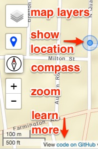
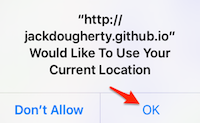

<!DOCTYPE html>
<html>
<head>
	<title>Discover Glastonbury 2016</title>
	<meta name="viewport" content="width=device-width, initial-scale=1.0">
	<meta charset="utf-8">
	<link rel="shortcut icon" href="favicon.ico">
	<!-- load Bootstrap CSS for mobile devices -->
	<link rel="stylesheet" href="https://maxcdn.bootstrapcdn.com/bootstrap/3.3.7/css/bootstrap.min.css" integrity="sha384-BVYiiSIFeK1dGmJRAkycuHAHRg32OmUcww7on3RYdg4Va+PmSTsz/K68vbdEjh4u" crossorigin="anonymous">
	<!-- Load Leaflet from a https CDN, not http. Look for updates at http://leafletjs.com/download.html -->
	<link rel="stylesheet" href="https://unpkg.com/leaflet@1.0.0-rc.3/dist/leaflet.css"/>
	<script src="https://unpkg.com/leaflet@1.0.0-rc.3/dist/leaflet.js"></script>
	<!-- load jQuery  -->
	<script src="https://code.jquery.com/jquery-3.1.0.min.js" integrity="sha256-cCueBR6CsyA4/9szpPfrX3s49M9vUU5BgtiJj06wt/s=" crossorigin="anonymous"></script>
	<!-- Load Esri Leaflet -->
	<script src="https://cdn.jsdelivr.net/leaflet.esri/2.0.2/esri-leaflet.js"></script>
	<!-- load Font-Awesome -->
	<link rel="stylesheet" href="https://cdnjs.cloudflare.com/ajax/libs/font-awesome/4.6.3/css/font-awesome.min.css">
	<!-- load Leaflet.locatecontrol -->
	<script src="https://cdn.jsdelivr.net/leaflet.locatecontrol/0.52.0/L.Control.Locate.min.js"></script>
	<link rel="stylesheet" href="https://cdn.jsdelivr.net/leaflet.locatecontrol/0.52.0/L.Control.Locate.min.css"/>
	<!-- load Leaflet-plugins to read GPX and KML -->
	<script src="https://cdnjs.cloudflare.com/ajax/libs/leaflet-plugins/1.9.0/layer/vector/GPX.min.js"></script>
	<script src="https://cdnjs.cloudflare.com/ajax/libs/leaflet-plugins/1.9.0/layer/vector/KML.min.js"></script>
	<!-- Load leaflet-geocoder to search locations-->
	<link rel="stylesheet" href="https://cdnjs.cloudflare.com/ajax/libs/leaflet-geocoder-mapzen/1.6.3/leaflet-geocoder-mapzen.css">
	<script src="https://cdnjs.cloudflare.com/ajax/libs/leaflet-geocoder-mapzen/1.6.3/leaflet-geocoder-mapzen.js"></script>
	<!-- load compass from local directory -->
	<link rel="stylesheet" href="src/leaflet-compass.css"/>
	<script src="src/leaflet-compass.js"></script>
	<!-- load distance markers with geometry from local directory; see also style.css -->
	<script src="src/leaflet.geometryutil.js" type="text/javascript"></script>
	<script src="src/leaflet-distance-marker.js" type="text/javascript"></script>
	<!-- load Leaflet.SlideMenu from local directory -->
	<link rel="stylesheet" href="src/L.Control.SlideMenu.css" />
	<script src="src/L.Control.SlideMenu.js"></script>
	<!-- load custom css -->
	<link rel="stylesheet" href="style.css"/>
</head>
<body>
	<div id="map"></div>
	<script>

	var map = L.map('map', {
	  center: [41.713854, -72.579417],
	  zoom: 13,
	  zoomControl: false, // add later to reposition
	  scrollWheelZoom: false
	});

	map.attributionControl
	.setPrefix("View <a href='http://github.com/jackdougherty/bikemapcode' target='_blank'>code on GitHub</a> | Download GPX routes <a href='https://raw.githubusercontent.com/JackDougherty/bikemapcode/master/routes/gb2016-10.gpx' target='_blank'>10 mi</a> - <a href='https://raw.githubusercontent.com/JackDougherty/bikemapcode/master/routes/gb2016-25.gpx' target='_blank'>25 mi</a> - <a href='https://raw.githubusercontent.com/JackDougherty/bikemapcode/master/routes/gb2016-50.gpx' target='_blank'>50 mi</a>");

	var controlLayers = L.control.layers( null, null, {
	  position: "topleft",
	  collapsed: false
	}).addTo(map);

	L.control.locate({
		locateOptions: {maxZoom: 16}, // default = 18
		strings: {title: "Show my location"} // To do: resize icon to make text appear alongside
	}).addTo(map);

	map.addControl( new L.Control.Compass({position: "topleft"}) );

	new L.control.zoom({position: "topleft",}).addTo(map);

	L.control.scale().addTo(map);

	// slide menu contents and position
	var contents = '<h4>BikeMapCode</h4>';
	contents += '<h5>Mobile-friendly web maps<br>with open-source templates</h5>';
	contents += '<p>Link to <a href="https://github.com/JackDougherty/bikemapcode">code and instructions on GitHub</a></p>';
	contents += '';
	contents += '<p>Distributed as-is with no warranty</p>';
	contents += '<p>Stop your bike in a safe place before using</p>';
	contents += '<p>Requires internet access to view maps and location</p>';
	contents += '<p>Allow smartphone browser to show your location<br> - iPhone > Settings > Privacy > Location Services (On) > Safari (While Using)<br> - Android (to come)</p>';
	contents += '<p>Click OK if browser asks permission to show your location</p>';
	contents += '';
	// contents += '<h5>Open Cycle Map layer legend</h5>';
	// contents += '';
	var slideMenu = L.control.slideMenu('', {position: 'topright', width: '300px', height: '100%', delay: '1'}).addTo(map);
	slideMenu.setContents(contents);

	// insert map title at top of layer control
	$('<h6 id="mapTitle">Discover Glastonbury 2016</h6>').insertBefore('div.leaflet-control-layers-base');

	// baselayer
	var Esri_WorldStreetMap = L.tileLayer('https://server.arcgisonline.com/ArcGIS/rest/services/World_Street_Map/MapServer/tile/{z}/{y}/{x}', {
		attribution: 'Tiles &copy; Esri'
	}).addTo(map);

	// starting marker
	L.marker([41.72398,-72.57342]).addTo(map);

	// overlay routes
	var gb10 = new L.GPX("routes/gb2016-10.gpx", {
		color: 'blue',
		distanceMarkers: { showAll: 11, offset: 1609, bgcolor: 'bg-blue'} // meters per mile; see also style.css
	}).addTo(map);
	controlLayers.addOverlay(gb10, '10 mile route  <i class="color-line bg-blue"></i>');

	var gb25 = new L.GPX("routes/gb2016-25.gpx", {
		color: '#ffcc00',
		distanceMarkers: { showAll: 11, offset: 1609, bgcolor: 'bg-yellow'} // meters per miles; see also style.css
	});
	controlLayers.addOverlay(gb25, '25 mile route <i class="color-line bg-yellow"></i>');

	var gb50 = new L.GPX("routes/gb2016-50.gpx", {
		color: '#ff3399',
		distanceMarkers: { showAll: 11, offset: 1609, bgcolor: 'bg-pink'} // meters per mile; see also style.css
	});
	controlLayers.addOverlay(gb50, '50 mile route <i class="color-line bg-pink"></i>');

	// Thanks @ilyankou for gatherBounds function; update layer names
	function gatherBounds() {
		var checkedLayers = [];
		var allLayers = [
			gb10,
			gb25,
			gb50
		];

		for (l in allLayers) {
			if (map.hasLayer(allLayers[l])) {
				checkedLayers.push(allLayers[l]);
			}
		}

		if (checkedLayers.length > 0) {
			map.fitBounds(L.featureGroup(checkedLayers).getBounds());
		}
	}

	map.on('layeradd', function() {
		gatherBounds();
	});

	map.on('layerremove', function() {
		gatherBounds();
	});

	</script>
</body>
</html>
